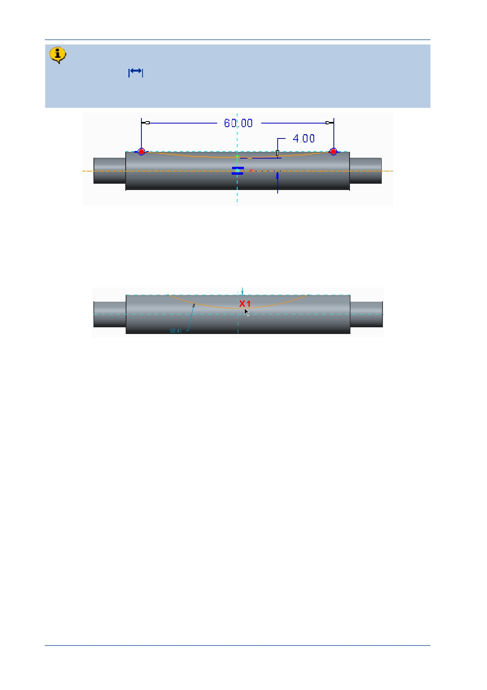

PTC Academic Program
You will now resize the arc using the mouse and then use the Normal
Dimension
tool to manage dimensions to match your design intent shown
below.
5. Dragging the arc to resize it:
Click to select and drag the arc until it is above the horizontal reference line as
shown by X1 , then release the mouse button to place the resized arc.
© 2012 PTC
Creo Parametric 2.0 Primer
Page 56